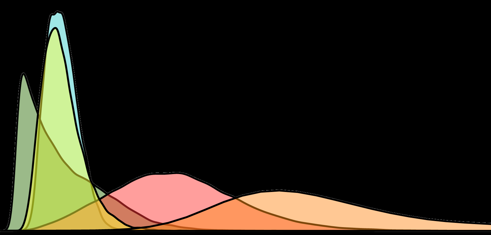

Experimental Design
Bio683
Learning Objective
This course is intended to provide a foundation in the proper design of scientific research projects in the field of biology. A wide range of biological experiments will be covered, and each type of experiment will be explored with an eye toward choosing the appropriate statistical technique for analysis. By the end of the course, successful students will be able to design biological studies that are statistically tractable and perform basic statistical analyses using the programming language R.
Class meets in BSBW room B25 TR 2:20-3:35.
For more information email Dr. Blackmon.
Lecture Topics
| Week | Topic | Reading |
|---|---|---|
| 1 | Introduction to R and Statistics | WS CH. 1-2 |
| beyond the bar | ||
| p-value crisis | ||
| 2 | Summaries and Estimates | WS CH. 3-4 |
| 3 | Probability and Bayes' theorem | WS CH. 5 |
| McElreath chap 2 | ||
| 4 | Hypothesis Testing | WS CH. 6-9 |
| 5 | Continuously Distributed Variables | WS CH. 10-13 |
| 6 | Experimental Design, ANOVA, Correlation | WS CH. 14-16 |
| 7 | Regression and Multiple Factors | WS CH. 17-18 |
| 8 | Exam 1 | |
| Spring Break | ||
| 9 | Mixed models | McElreath chap 12 |
| 10 | Heterogeneity and Hierarchical Data | TBD |
| 11 | Non-Gaussian Response Variables | TBD |
| 12 | Species as data points | Inferring Phylogenies Chap. 25 |
| 13 | Expression data | TBD |
| 14 | Genomes | TBD |
| 15 | Exam 2 |
Lab Activities and Homeworks
Lab exercies 1 - R basics
homework 1
Lab exercies 2 & homework 2
Lab exercies 3 & homework 3
Lab exercies 4 & homework 4
Lab exercies 5
Lab exercies 6
Lab exercies 7
Lab exercies 8
Lab exercies 9
Lab exercies 10
Lab exercies 11
Lab exercies 12
Lab exercies 13
Extra Resources
Google R style guide
Review sheet for exam 1
Review sheet for exam 2
R cheat sheet